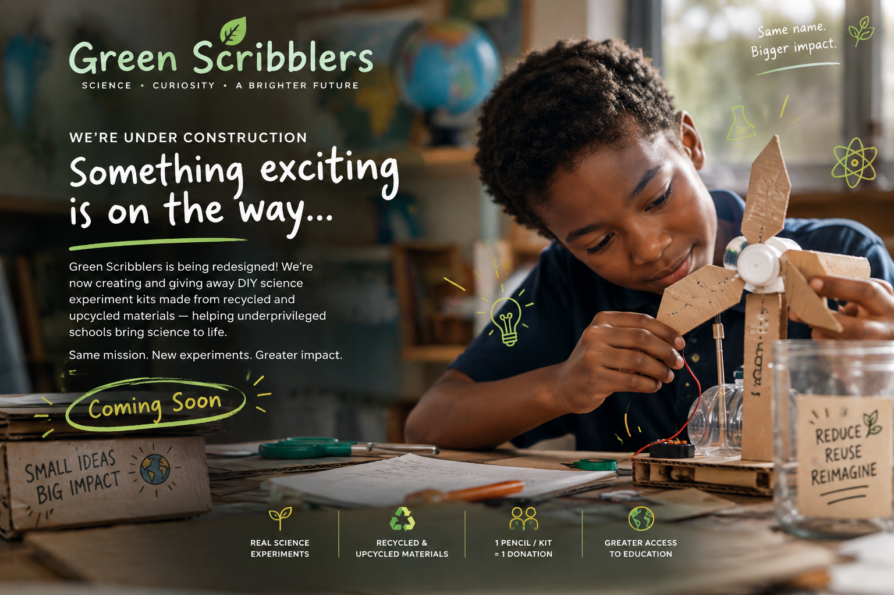

Green Scribblers is being redesigned. We're now creating and giving away DIY science experiment kits made from recycled and upcycled materials - helping underprivileged schools bring science to life.
Same mission. New experiments. Greater impact.